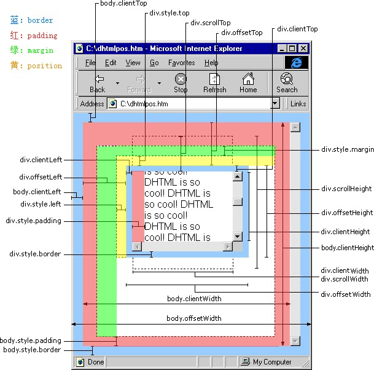

scrollHeight: 获取对象的滚动高度。
scrollLeft:设置或获取位于对象左边界和窗口中目前可见内容的最左端之间的距离
scrollTop:设置或获取位于对象最顶端和窗口中可见内容的最顶端之间的距离
scrollWidth:获取对象的滚动宽度
offsetHeight:获取对象相对于版面或由父坐标 offsetParent 属性指定的父坐标的高度
offsetLeft:获取对象相对于版面或由 offsetParent 属性指定的父坐标的计算左侧位置
offsetTop:获取对象相对于版面或由 offsetTop 属性指定的父坐标的计算顶端位置
event.clientX 相对文档的水平座标
event.clientY 相对文档的垂直座标
event.offsetX 相对容器的水平坐标
event.offsetY 相对容器的垂直坐标
document.documentElement.scrollTop 垂直方向滚动的值
event.clientX+document.documentElement.scrollTop 相对文档的水平座标+垂直方向滚动的量
clientHeight = 内容实际高度 + 上下内边距。
offsetHeight = height + padding + border，多个border
scrollHeight和元素本身的高度完全无关，是浏览器根据元素padding和子元素的盒模型高度累加计算出来的。
scrollHeight计算高度时，会累加上以自身为定位祖先元素的所有后代定位元素的可视高度。